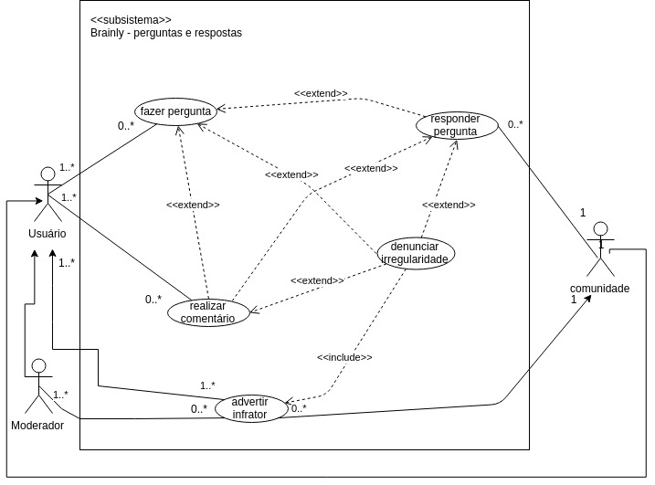

PERGUNTAS E RESPOSTAS
Versionamento
| Versão | Data | Modificação | Autor |
|---|---|---|---|
| 1.0 | 28/04/2019 | Adição do diagrama de casos de uso de perguntas e respostas | Lieverton |
| 1.1 | 28/04/2019 | Adição da especificação dos casos de uso de perguntas e respostas | Lieverton, João Matheus, Paulo Vitor, João Rossi |
Diagrama de Casos de Uso

Especificação de Casos de Uso
1 Breve descrição
O usuário faz uma pergunta para ser respondida por outros usuários, utilizando seus pontos para recompensar quem respondê-la de maneira coerente.
2 Breve descrição dos atores
2.1 Usuário
Ator que possui acesso às funcionalidade comuns da plataforma, como, fazer perguntas, escrever respostas e comentários, adicionar amigos, entre outras.
2.2 Moderador
Ator que modera os conteúdos do Brainly, esclarece as políticas da plataforma à comunidade e mantém o nível de qualidade das perguntas, respostas e comentários.
2.3 Comunidade
Conjunto de usuários em prol de se ajudarem.
3 Pré-condições
Ser cadastrado na plataforma Brainly. Possuir no mínimo dez pontos para realizar uma pergunta.
4 Fluxo básico de eventos
1. O caso de uso começa quando o usuário possui uma dúvida e decide fazer uma pergunta na plataforma Brainly para saná-la.
2. Usuário digita uma pergunta.
3. Usuário oferece pontos.
4. Usuário adiciona matéria que corresponde à área de conhecimento da pergunta.
5. O usuário finaliza a pergunta.
6. Um segundo usuário da comunidade, que deseja contribuir, navega pela listas de perguntas.
7. Esse usuário escolhe uma pergunta.
8. Esse usuário responde a pergunta.
5 Fluxos alternativos
2.a Usuário adiciona uma equação à pergunta.
2.b Usuário adiciona um anexo à pergunta.
2.c Usuário adiciona símbolo à pergunta.
7.a Usuários ou moderadores comentam em uma pergunta.
7.b A comunidade denuncia más práticas em uma pergunta.
7.c O moderador adverte o usuário que cometeu a infração.
8.a Usuários ou moderadores comentam em uma resposta.
8.b A comunidade denuncia más práticas em uma pergunta.
8.c O moderador adverte o usuário que cometeu a infração.
6 Fluxo de Exceções
[2 - 4] Usuário aperta f5(reinicia a página) acidentalmente, ao clicar em fazer pergunta novamente, tudo o que o usuário tinha digitado e escolhido na pergunta anteriormente se mantém.
[2] Usuário digita uma pergunta com menos de 20 caracteres e recebe uma mensagem de erro sem que sua mensagem seja apagada.
7 Requisitos Especiais
-
Responsabilizar o usuário por todos os dados enviados ou transmitidos em conexão com os serviços BR2.1.
-
Apagar perguntas que estão sem respostas por muito tempo BR2.15.
-
A ferramenta que possibilita respostas deve ser consistente entre as plataformas INT1.2.
-
Para aplicação de punições, deve-se levar em conta a conduta (advertências) do usuário na plataforma INT2.10.
-
Possuir idade mínima (13) para se registrar na plataforma BR2.1.
-
A plataforma deve possuir membros ativos que ajudem a comunidade a crescer e respondam as perguntas de forma rápida e fácil INT3.6.